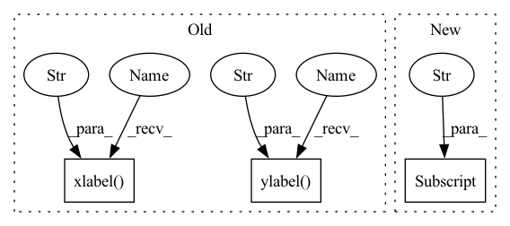

Pattern ID :34789
Before Change
Plot training and validation results over the number of epochs.
plt.plot(history.history["loss"], label="Training Set")
plt.plot(history.history["val_loss"], label="Validation Data)")
plt.ylabel("Categorical Cross Entropy Loss" )
plt.xlabel("Num Epochs" )
plt.title("Performance on Training vs. Validation")
plt.legend(loc="upper left")
if not os.path.exists(plot_dir):After Change
// ax1.set_title("Training vs. Validation Loss")
// Plot Accuracy
ax2.plot(history.history["categorical_accuracy"] , label="Training Set")
ax2.plot(history.history["val_categorical_accuracy"], label="Validation Data)")
ax2.set_ylabel("Accuracy")
ax2.set_xlabel("Num Epochs")In pattern: SUPERPATTERN
Frequency: 3
Non-data size: 3
Instances Fragment ID: 99765715
Project Name: stan-hua/cytoimagenet
Commit Name: 1ab297e870800b585b527efea61b1dad69bc8ee4
Time: 2021-08-03
Author: stanley.hua@mail.utoronto.ca
File Name: scripts/model_pretraining.py
M Class Name: AnonimousClass
N Class Name: AnonimousClass
M Method Name: plot_loss(3)
N Method Name: plot_loss(2)
M Parent Class:
N Parent Class:
M File Name: scripts/model_pretraining.py
N File Name: scripts/model_pretraining.py
M Start Line: 93
M End Line: 105
N Start Line: 128
N End Line: 158
Before Change
del tf
plt.figure(figsize=(8, 4))
plt.imshow(att.detach().numpy(), interpolation="nearest", aspect="auto", origin="lower")
plt.xlabel("Inputs" )
plt.ylabel("Outputs" )
plt.xticks(range(len(att[0])), labels=phones)
plt.tight_layout()
if not os.path.exists(os.path.join(att_dir, "attention_plots")):
os.makedirs(os.path.join(att_dir, "attention_plots"))After Change
ax[1].set_title("Hard-Attention")
fig.tight_layout()
plt.rcParams["axes.titley"] = 1.0
plt.rcParams["axes.titlepad"] = -14
plt.subplots_adjust(hspace=0.0)
if not os.path.exists(os.path.join(att_dir, "attention_plots")):
os.makedirs(os.path.join(att_dir, "attention_plots")) Fragment ID: 99765718
Project Name: digitalphonetics/ims-toucan
Commit Name: f4b6225ffb1360b67aca1559ae7fb18b17788dbf
Time: 2021-09-26
Author: florian.lux@ims.uni-stuttgart.de
File Name: TrainingInterfaces/Text_to_Spectrogram/Tacotron2/tacotron2_train_loop.py
M Class Name: AnonimousClass
N Class Name: AnonimousClass
M Method Name: plot_attention(7)
N Method Name: plot_attention(7)
M Parent Class:
N Parent Class:
M File Name: TrainingInterfaces/Text_to_Spectrogram/Tacotron2/tacotron2_train_loop.py
N File Name: TrainingInterfaces/Text_to_Spectrogram/Tacotron2/tacotron2_train_loop.py
M Start Line: 30
M End Line: 39
N Start Line: 29
N End Line: 53
Before Change
Plot training and validation results over the number of epochs.
plt.plot(history.history["loss"], label="Training Set")
plt.plot(history.history["val_loss"], label="Validation Data)")
plt.ylabel("Categorical Cross Entropy Loss" )
plt.xlabel("Num Epochs" )
plt.title("Performance on Training vs. Validation")
plt.legend(loc="upper left")
if not os.path.exists(plot_dir):After Change
// Plot Accuracy
ax2.plot(history.history["categorical_accuracy"], label="Training Set")
ax2.plot(history.history["val_categorical_accuracy"] , label="Validation Data)")
ax2.set_ylabel("Accuracy")
ax2.set_xlabel("Num Epochs")
// ax2.set_title("Training vs. Validation Accuracy") Fragment ID: 99765716
Project Name: stan-hua/cytoimagenet
Commit Name: 1ab297e870800b585b527efea61b1dad69bc8ee4
Time: 2021-08-03
Author: stanley.hua@mail.utoronto.ca
File Name: scripts/model_pretraining.py
M Class Name: AnonimousClass
N Class Name: AnonimousClass
M Method Name: plot_loss(3)
N Method Name: plot_loss(2)
M Parent Class:
N Parent Class:
M File Name: scripts/model_pretraining.py
N File Name: scripts/model_pretraining.py
M Start Line: 93
M End Line: 105
N Start Line: 128
N End Line: 158
Before Change
plt.plot(train_loss_list, label="train")
plt.plot(validation_loss_list, label="val")
plt.title("Loss vs Epoch")
plt.xlabel("Epoch" )
plt.ylabel("Loss" )
plt.legend()
plt.show()
After Change
model = model.to(device)
if "previous_path" in config:
model_state = torch.load(config["previous_path"] , map_location=device)
model.load_state_dict(model_state)
dataset = IntentTransformerDataset(dataset_nums, img_transform=transforms.ToTensor()) Fragment ID: 99765717
Project Name: xushenlz/parksim
Commit Name: ec66e2d8e096621262c882cb331d5b4387849163
Time: 2022-04-05
Author: lacayomatt@gmail.com
File Name: python/parksim/trajectory_predict/intent_transformer/train.py
M Class Name: AnonimousClass
N Class Name: AnonimousClass
M Method Name: train_model(8)
N Method Name: train_model(5)
M Parent Class:
N Parent Class:
M File Name: python/parksim/trajectory_predict/intent_transformer/train.py
N File Name: python/parksim/trajectory_predict/intent_transformer/train.py
M Start Line: 102
M End Line: 119
N Start Line: 115
N End Line: 145